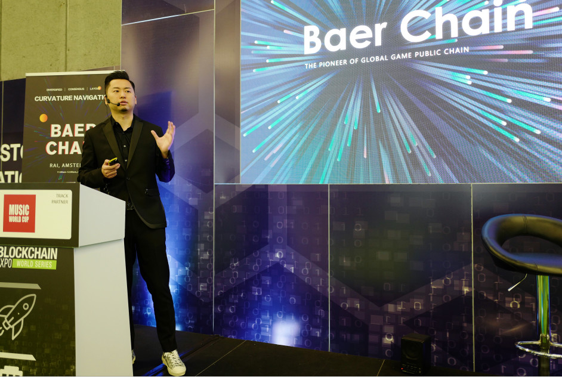
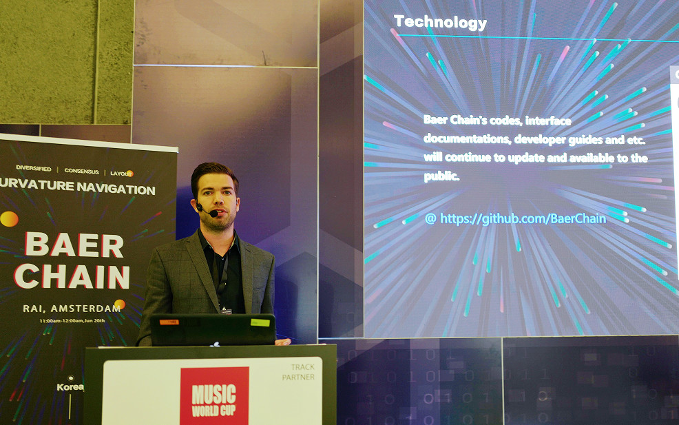
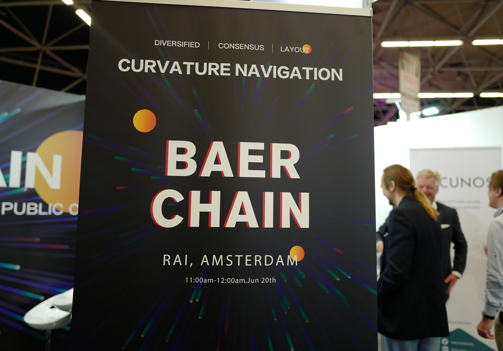
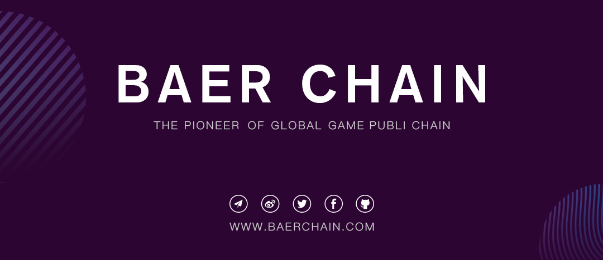

1
On June 20th, Baer Chain's Curvature Navigation Developers Conference was successfully held at BLOCKCHAIN EXPO 2019, the global blockchain fair in Amsterdam, the Netherlands.
At the event, many industry elites and professional game developers gathered together to conduct in-depth exchanges and discussions on topics such as blockchain development trends, blockchain games, and smart contracts.
During the conference, the founder and CEO of Baer Chain, Vincent, delivered a presentation on Baer Chain’s project and technology development. At the beginning of June, the Baer Chain mainnet was officially launched, and more than ten third-party game development teams are developing games based on the Baer Chain technology architecture. Vincent also revealed other development progress.

Vincent said, "This series of curvature navigation developers conferences is continuing to ferment on a global scale. More and more industry elites have joined our events. The participation of these world-class technology giants will surely accelerate the technological innovation and breakthrough of Baer Chain's mainnet."
2
Since the official launch of the mainnet, technical development has been progressing in an orderly manner with the cooperation of all teams. At the meeting, Twan Poubroeks shared his experiences regarding this as a super node representative.

Baer Chain deploys query nodes on the chain and provides a large number of interfaces that allow all technicians to enter commands to perform specific queries and to optimize the technology by obtaining the underlying data on the Baer Chain.
In the query nodes, there are a lot of commands, which are used to obtain information about contracts, accounts, blocks, etc., in order to help developers more directly access the data on the chain.

In addition, Twan also explained the development of smart contracts based on Baer Chain's mainnet technology architecture: Baer Chain has published smart contract documents on github, and all developers can quickly access the smart contract development through the documents.
3
The well-known business media profession, Richard Kastelein, and the encryption industry entrepreneur, Ruud Feltkamp, had an in-depth conversation with Vincent to discuss the development trend of the blockchain and the application of blockchain games.
From the perspective of ERC721, Richard Kastelein analyzed the development opportunities of blockchain games: "In the early development of blockchain games, NFTs effectively attracted more people to pay attention to the application of this technology. With the update of this technology, blockchain can carry games with better experience, so pure asset attributes are not enough."
Vincent introduced Baer Chain's BAS (Baer Chain Asset Standard) protocols, with its large, stackable, but not completely homogenous features,which can bring us more possibilities of blockchain game application scenarios.
Ruud Feltkamp is the co-founder and CEO of Cryptohopper, a well-known European automated trading platform. He and Vincent exchanged views on the cryptocurrency assets in automated trading.
After the world's most influential blockchain expo, Baer Chain will travel to the UK next week to continue the global impact expansion journey in Cambridge.
